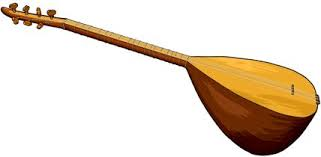

Bağlama Hakkında
Bağlama, Türk müziğinde önemli bir yere sahip, yaylı bir çalgıdır ve kökenleri yüzyıllar öncesine dayanmaktadır.
Bu çalgı, Türk halk müziğinde ve Türk sanat müziğinde yaygın olarak kullanılır ve zengin bir tarihsel ve kültürel geçmişe sahiptir.
Tarihsel Gelişimi
Bağlamanın kökenleri, Orta Asya’ya kadar uzanır. Türk topluluklarının göçleri sırasında, farklı coğrafyalarda çeşitli enstrümanlar geliştirilmiştir.
Bağlama, bu göç ve etkileşim süreçleri sonucunda ortaya çıkan bir çalgıdır. İlk örnekleri, Orta Asya’daki Türk kültürlerinde görülen ve benzer yapıdaki çalgılara dayanır.
Bağlama’nın Yapısı
Bağlama, genellikle üç veya daha fazla tel ile yapılan bir çalgıdır. Tel sayısı ve akor düzeni, farklı bağlama türlerinde değişiklik gösterebilir.
Yaylı çalgılar arasında yer alması nedeniyle, çalma tekniği oldukça önemlidir. Geleneksel olarak, bağlama parmakla çalınırken,
günümüzde bazı sanatçılar yay kullanarak da performans sergilemektedir.
Bağlama, Türk halk müziğinin yanı sıra, Türk sanat müziğinde de önemli bir rol oynamaktadır. Bu çalgı, özellikle yöresel müziklerde,
düğünlerde ve festivallerde sıklıkla kullanılır. Anadolu’nun farklı bölgelerine özgü ezgiler, bağlamanın zengin ses olanaklarıyla harmanlanarak,
dinleyicilere derin bir müzik deneyimi sunar.
Geleneksel bağlama eğitimi, ustadan çırağa geçiş yoluyla gerçekleşir. Bu eğitim, genellikle aile içinde veya yerel müzik topluluklarında verilir.
Ancak, son yıllarda bağlama eğitimi, müzik okulları ve kurslar aracılığıyla daha sistematik bir hale gelmiştir.
Bağlama dersleri, öğrencilerin hem teorik bilgi hem de pratik beceriler kazanmalarını sağlayacak şekilde yapılandırılmaktadır.
Bağlama, köklü geçmişi, zengin sesi ve benzersiz yapısıyla Türk müziğinin vazgeçilmez bir parçasıdır.
Tarihsel süreçte geçirdiği evrim, kültürel etkileşimler ve müzikal çeşitlilik, bağlamayı sadece bir müzik aleti değil,
aynı zamanda bir kültür simgesi haline getirmiştir.